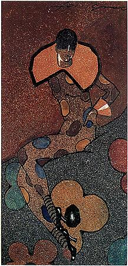
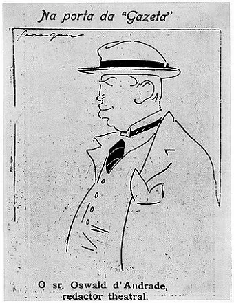

Colombina (1921)

Colombina é a obra mais conhecida de Ferrignac. Foi feita em nanquim, aquarela e colagem sobre papel, e hoje faz parte do acervo do Instituto de Estudos Brasileiros da USP.
Em 1971, a obra foi exibida na Bienal de São Paulo, na sala que lembrava os 50 anos da Semana de Arte Moderna.
- Ano: 1921
- Técnica: nanquim, aquarela e colagem sobre papel
- Acervo: Instituto de Estudos Brasileiros (IEB-USP)
Caricatura de Oswald de Andrade (1918)

Este desenho mostra o talento de Ferrignac como caricaturista. Oswald de Andrade foi um dos escritores mais importantes do Modernismo brasileiro.
- Ano: 1918
- Tipo: caricatura
Voltar para a página Quem foi Ferrignac.